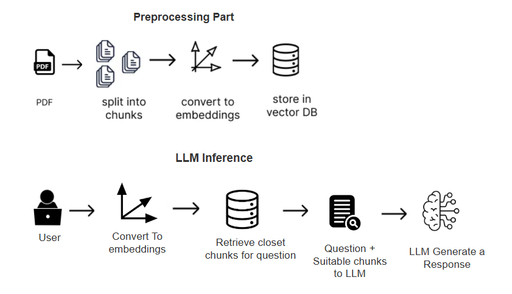
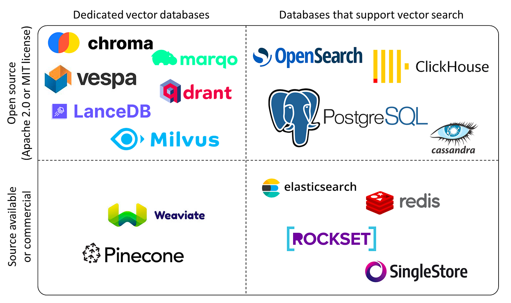

Basic RAG System

Problems in system
- When separting to fixed token chunks, it loses the relavent infomration ex: 1 paragraph 250 word and 2nd paragraph 300 words, if we set chunk size to fixed we are unable to capture meaning
** Numerical data representation will be wrong**
Vector Databases

- FAISS only vector search algorithm not as a vector database functionalities
Indexing Technqiues
- LSH
- HNSW
- IVF
Used to organize the embedding vectors
Retrival algorithms
- ANN
- KNN
- Hybrid Search
Before searching relavent vectors need to format user Question for better Retrival from vector database

CAG (Cache Augmented Generation)
- RAG vs CAG
In CAG all the necessary instructions are ready as an key value pair. It uses context window for this
GraphRAG
- microsoft
- neo4j
- Expensive because multiple LLM calls
LightRAG
- Much more effective than GraphRAG
KAG (Knowledge Augmented Graph)
It built on OpenSPG engine solve RAG and GraphRAG limitation
LLM Agents frameworks
- CrewAI
- PydanticAI
- Autogen
- LlamaIndex
- LangChain
DSPY (declarative self improving python)
- Not LLM prompting, programtically prompting
MCP (Model Context Protocol)
- Anthropic for common protocol
ex: Coding activities